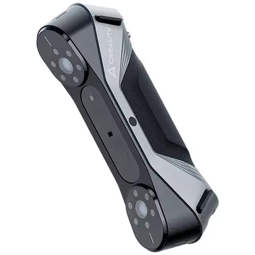
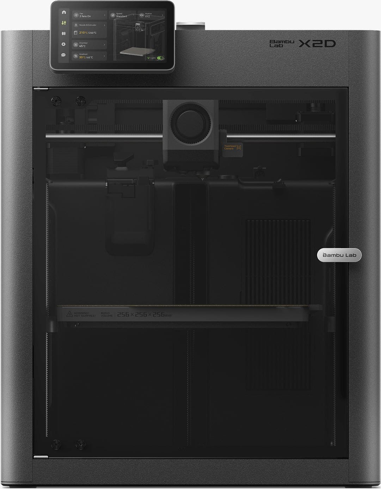
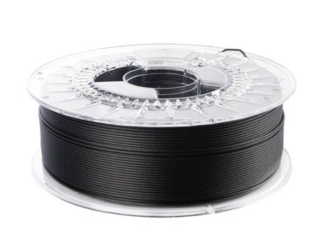

PROFIL
Od poškozeného dílu k přesné digitální kopii.
Spojuji 3D skenování s FDM tiskem, abych dokázal rychle reagovat tam, kde čekání na originální díl nebo exponát prostě není možnost.
Dobrý den, 3D Kastl Studio jsem založil na Chomutovsku proto, abych průmyslovým podnikům i památkovým institucím přinesl služby, které na lokálním trhu chyběly. Moje práce stojí na unikátním propojení technické preciznosti a hlubokého vztahu k historii.
Mám za sebou více než 6 let praxe jako inženýr kvality v automotive (Tier 2). Díky tomu vím, co obnáší nekompromisní průmyslová kvalita, procesní disciplína a rychlost, která je potřeba, když hrozí zastavení výroby. Zároveň jsem vystudoval ochranu kulturního dědictví na Filozofické fakultě UHK, což mi dalo cit pro detail a odborné zázemí pro práci s historickými artefakty.
Díky těmto zkušenostem pro vás zajišťuji kompletní proces od nápadu až po hotový produkt:
- Průmyslové 3D skenování & reverzní inženýrství: Rychlé řešení krizových situací. Pokud se vám rozbije důležitý komponent, dokážu ho přesně naskenovat, digitálně opravit a připravit pro výrobu nového kusu.
- 3D modelování a CAD design: Pracuji s pokročilými nástroji na Windows i Androidu. Vaše představy dokážu precizně vymodelovat, ať už jde o technický díl nebo organický tvar.
- Aditivní výroba (FDM tisk) z odolných materiálů: Specializuji se na tisk z vysoce odolných průmyslových materiálů, jako jsou PCTG, karbonem plněný polypropylen (PP-CF) nebo Nylon. Výsledné díly snesou tvrdé mechanické i chemické namáhání.
- Digitalizace a muzejní repliky: Dokážu s maximálním respektem k originálu digitalizovat historické předměty a vytvářet věrné repliky pro muzea a expozice.
Proč spolupracovat se 3D Kastl Studio?
Nekupujete si anonymní službu, jednáte přímo se mnou. Jsem člověk, v němž se potkává preciznost automotive inženýra s odborným pohledem historika. Rozumím průmyslovým standardům a materiálům stejně dobře jako metodice a etice zacházení se sbírkovými předměty.
Ať už potřebujete mluvit technickým jazykem pro záchranu výrobní linky, nebo hledáte partnera pro šetrnou digitalizaci historického fondu, jsem tu pro vás. S absolutní pečlivostí k oběma světům.
Bc. Jan M. Kasl
JAK TO FUNGUJE
Od skenu k hotovému dílu
Základní postup je u všech zakázek podobný — liší se hlavně důraz na rychlost, nebo naopak na citlivost k originálu.
3D skenování
Na místě nebo v dílně oskenuji díl či exponát s přesností na desetiny milimetru.
CAD model
Z naskenovaných dat sestavím upravitelný 3D model, případně opravím vady nebo doplním chybějící části.
Volba materiálu
Podle namáhání, prostředí a účelu zvolím PETG, PCTG, PA nebo jiný vhodný materiál.
Tisk a dodání
Vytisknu na Bambu Lab X2D a díl dodám připravený k okamžitému použití.
VYBAVENÍ
Čím skenuji a tisknu
Vybavení volím tak, aby zvládlo jak technický díl s přesnými tolerancemi, tak jemné detaily historického exponátu.

Creality CR-Scan Raptor
Přesné zachycení geometrie i drobných detailů povrchu, vhodné pro technické díly (laser s přesností až 0,02mm) i umělecké exponáty (infračervené světlo s přesností až 0,1mm).

Bambu Lab X2D
FDM tiskárna pro funkční díly i jemné repliky, se stabilní přesností potřebnou pro výrobní použití. (Tisková plocha až 256 x 256 x 260 mm)

PETG · PCTG · PA
Materiály volím podle namáhání a prostředí dílu — od běžného provozu po chemicky a mechanicky náročné podmínky.